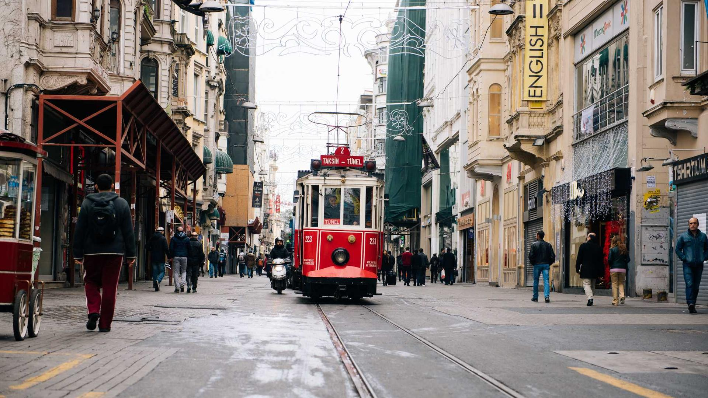
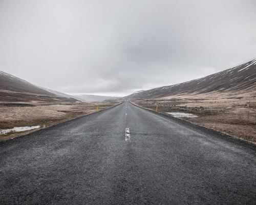
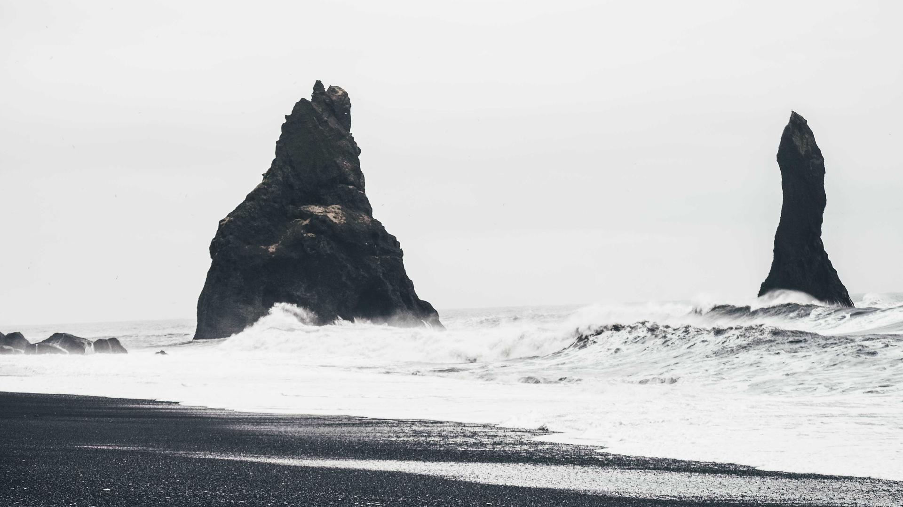

Commercial and Specialised-Diving
Formed in 1999, incorporated in 2002 and operating for almost 20 years, Commercial and Specialised Diving provide a wide range of commercial, swimming pool, equipment hire and TV services across the diving spectrum and has a reputation for providing a quality, professional service with highly competitive rates.
Our project managers are experienced and HSE accredited dive supervisors, possessing HSE compliant dive teams that have a wealth of experience across many fields of diving, with backgrounds from the offshore industry, armed forces, rescue services, underwater construction industry and more.
We are able to provide 24/7 services nationwide, to minimize disruption for your business plus a rapid response nationwide emergency call out service.

Our Services
Commercial Diving
With almost 20 years experience, full HSE compliance and an outstanding safety record, we are safe to provide a professional, safe and cost effective solution for all our clients.
- Burning & Cutting
- Welding
- Concrete Repairs
- Inspections & Maintenance Reviews
- Grout Protection
- Mechanical Engineering
- Civil Engineering & Maritime Construction Support
- Confined Space
- Recovery & Clearance
- Industrial Diving
- Scientific Survey & Archaeological Support
- Shipping Services


Underwater Swimming Pool Repairs
Commercial and Specialised Diving survey, repair, maintain and provide upgrades for commercial and private swimming pools 24/7, without the expense and possible damage caused by draining.
Other benefits of underwater maintenance include zero or minimal down-time, loss of water and cost of heating, chemicals, water etc. Our overnight/out of hours, seven days a week service ensures we carry out the work when it is most convenient for you, and your clients, and our rapid response teams can respond to emergencies and ensure your pool is back up and running as quickly as possible.
- Underwater Surveys & Inspections
- Underwater Tiling
- Underwater Grouting
- Underwater Leak Detection
- Pool Grilles
- Movable Floors Inspection & Repairs
- Underwater Expansion Joints
- Seismic Tasks
- Drilling & Fixing
- Health & Safety Upgrades
- Underwater Cleaning
- Miscellaneous Works
Equipment Hire
Commercial and Specialised Diving offer a large array of specialist tools & equipment for hire.
Please contact us for further details or if you have a particular requirement not listed here.
- Boats
- Pontoons
- Water Safety Equipment
- Wildfire Equipment
- Surface Supplied Equipment
- Specialist Equipment Hire
- ROV's
- Police Diving Equipment
- Film & TV Equipment
Film And TV Services
Commercial and Specialised Diving offer comprehensive support and safety services for Film & TV productions.
From response safety & boats. Underwater camera & specialist personnel behind the scenes. Special supporting actors and artists to lead in front of the camera.
We are passionate about underwater film productions and we apply the same ensure safely and completion of all tasks and to ensure your project is run smoothly and efficiently.
- Safety Divers
- Safety Boats
- Police Divers
- Specialist Divers & Extras
- Specialist Equipment Hire
- Consultancy & Training
- Marine Support
- Underwater Camera Crews
- Film & TV Credits
Recent Testimonials
I would also like to take this opportunity to thank you for responding to and assist in the effort who have completed a fantastic job. The pool is now open and looks instead. In our own critical standard.
Just to let you know that the pool is back on and people are with our value pool and we have been getting very good feedback so far!!! Thank you,
These boys are great, thank you for the work carried out. I will not quickly be within the other recommendation. many thanks.